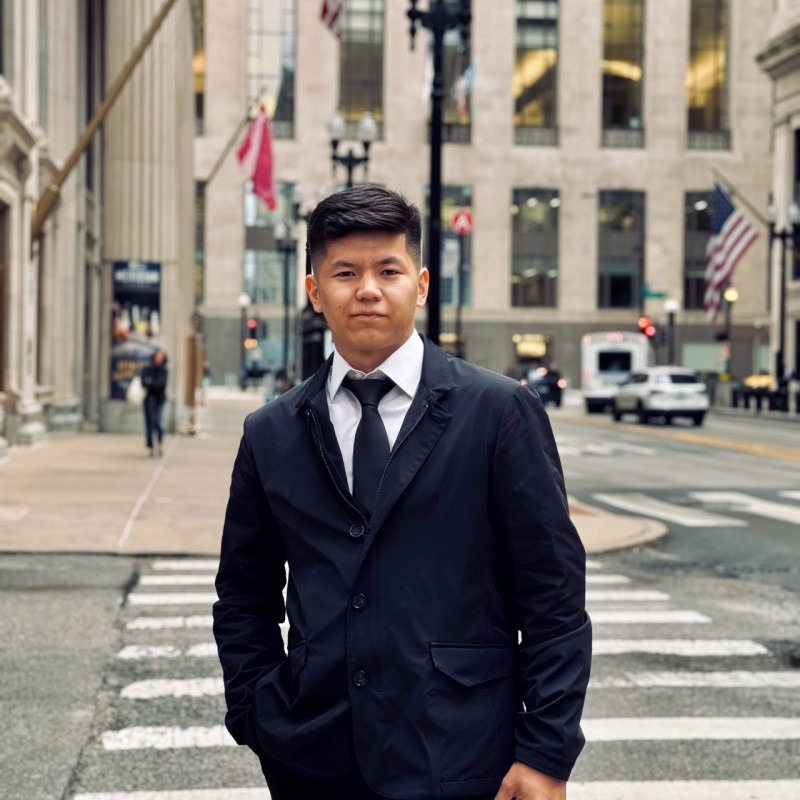

Senior at DePaul University, majoring in Computer Science with a concentration in AI.
I came to the US from Kyrgyzstan, where physics is what got me into programming — gold at the national Physics Olympiad and bronze at the World Physics Olympiad along the way.
Currently building agentic mobile QA systems with LLMs at an early-stage YC startup. Before that I worked on high-throughput Flask APIs for a fintech (cut response latency by ~22%) and side projects in ML inference and RAG on AWS, including a retrieval system that hit 90%+ accuracy on enterprise data.
Comfortable with Python, SQL (PostgreSQL/MySQL), JavaScript, C++, Docker, AWS, gRPC/REST, and CI/CD. I've TA'd Data Structures for 60+ students, took 1st at the DePaul Hackathon, and spent a summer preprocessing stellar datasets for a NASA-funded research grant.